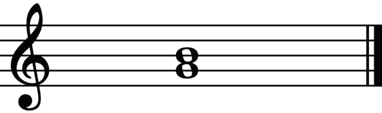
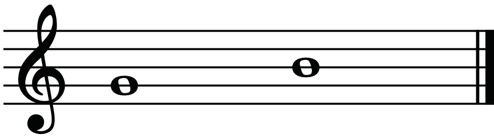

Harmonic and melodic intervals
Intervals can be constructed either harmonically or melodically. A harmonic interval occurs when two notes are played or sung at the same time. A melodic interval occurs when two notes are played or sung one after another or in succession. Figures 3.2 and 3.3 show harmonic and melodic intervals on the staff.


Interval identification
This involves naming or recognising the distance between two pitches. The identity of an interval can be determined by considering the quantity (numeric size) and quality of an interval. At this level, however, you will only learn how to identify intervals by their quantities or numerical sizes.
Quantity or numeric size of intervals
The quantity of an interval is identified by counting the number of notes from the lowest to the highest note in a particular interval. For example, to identify the interval from C to E, you have to count the number of notes in between these notes. You will find that there are three notes (C, D and E) when you count from C to E. Figure 3.4 shows how to count notes from note C to E on a staff.